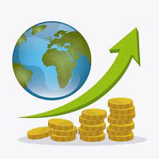

Karate é uma palavra japonesa que significa "mãos vazias". É uma arte altamente científica, fazendo o mais eficaz uso de todas as partes do corpo para fins de auto-defesa. O maior objetivo do karate é a perfeição do caráter, através de árduo treinamento e rigorosa disciplina da mente e do corpo.
Hoje Brasil X Argentina
O futebol é um esporte jogado entre duas equipes de onze jogadores cada, usando uma bola esférica. É o esporte mais popular do mundo, com um vasto número de praticantes e espectadores em quase todos os países.
Economia

A economia é o estudo da produção, distribuição e consumo de bens e serviços. Envolve a análise de como indivíduos, empresas e governos alocam recursos escassos para satisfazer necessidades e desejos. A economia se divide em microeconomia, que foca no comportamento de agentes individuais, e macroeconomia, que examina o desempenho da economia como um todo, incluindo crescimento, inflação e desemprego. Políticas econômicas, como fiscais e monetárias, são usadas para influenciar a economia. A economia global é interconectada, com comércio internacional e finanças afetando significativamente os mercados locais e globais.
Desemprego diminui em 1%
O desemprego é a condição de indivíduos que estão aptos e desejam trabalhar, mas não encontram emprego. É um indicador econômico importante que reflete a saúde econômica de um país. Existem vários tipos de desemprego, incluindo friccional (transitório), estrutural (mudanças na economia que tornam certas habilidades obsoletas), cíclico (devido a flutuações econômicas) e sazonal (variações em certas épocas do ano). Altos níveis de desemprego podem levar a problemas sociais e econômicos, como pobreza e perda de produção, enquanto taxas baixas são geralmente um sinal de uma economia saudável.
Entretenimento
Patati e Patatá aparecerão no marco zero no dia 13/08.